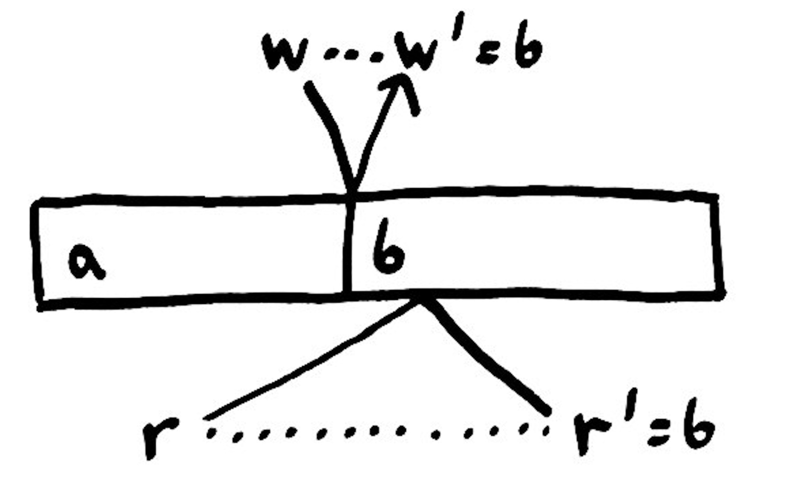

强一致性模型
网络分区会出现。交换机、网卡、主机硬件、操作系统、磁盘、虚拟层和语言运行时（更不用说程序语义本身）都存在延迟、丢包、复制或者重新排序我们的消息。在不确定的世界中，我们希望我们的软件保持在直觉上的正确性。
显然我们需要直观的正确性。做正确的事 ^{TM} ！但究竟什么是正确的？我们如何描述它？在这篇文章中，我们会介绍一些“强”一致性模型，并看一下如何将他们组合在一起。
正确性
有很多方法可以表示算法的抽象行为 —— 但现在我们假设一个系统由一个状态和转换该状态的一些操作组成。随着系统的运行，通过某种操作调度[注1]从一个状态转换到另一个状态。

例如，状态可能是一个变量，对状态的操作可能是对变量的写入和读取。在这个简单的 Ruby 程序中，可以写入和读取几次，然后打印到屏幕来显示读取的内容。
x = "a"; puts x; puts x
x = "b"; puts x
x = "c"
x = "d"; puts x
对这个程序的正确性，我们已经有了一个直观的模型：应该输出"aabd"。为什么？因为每个语句都是按顺序执行的。首先，写入值 a，然后读取值 a，读取值 a，写入值 b，等等。
一旦我们将一个变量设置为某个值，例如 a，读取时就会返回 a，直到我们再次对值做了变更。读取一个变量返回最近写入的值。我们称这种系统为有单一值的变量 —— 一个寄存器。
从我们开始编写程序的第一天起，这种模式已经深入到了我们的大脑中，所以感觉就像第二天性，但这不是变量得以工作的唯一方式。一个变量在一次读取时可能返回任意值：a、d 或者月球。如果这种情况发生，我们会说系统是不正确的，因为这些操作跟我们期望变量工作的方式不一样。
这暗示了系统正确性的定义：给出一些与操作和状态相关的规则，系统中的操作调度应该总是遵循这些规则。我们称这些规则为 一致性模型。
我们把关于寄存器的规则用简单的英语描述出来，但是他们可能是任意的复杂数学结构。“读取返回两次写入前的值，加上三，除非值为四，在这种情况下读取可能返回猫或狗”也是一个一致性模型。就像“每次读取都返回零”。我们甚至可以说“没有任何规则；所有的操作都是允许的”。这是可以满足的最容易的一致性模型；一般意义上说，每个系统都遵循这个模型。
更正式地说，我们说的一致性模型是所有允许操作的调度的集合。如果我们运行一个程序，然后执行在允许集合中的一系列操作，对于特定的执行操作是一致的。如果程序偶尔出现故障，经过了不在一致性模型中的一个调度，我们说调度是不一致的。如果每个可能的执行都在允许的集合中，则系统满足一致性模型。我们希望真实的系统满足“直观正确”的一致性模型，以便我们可以编写可预期的程序。
并发调度
现在我们假设有一个并发的程序，如用 Node.js 或 Erlang 写的程序。有多个逻辑的控制线程，我们用术语“过程”来定义。如果我们用两个过程来运行一个并发的程序，每一个都有相同的寄存器，我们前面提到的寄存器变量模型就被违反了。

这里有两个过程同时工作：称之为"顶部"和"底部"。顶部的过程尝试写入 a、读取、读取。与此同时，底部的过程尝试读取、写入 b、读取。因为程序是并发的，从这两个过程发出的操作可能会以多种不同的顺序交错，只要单个过程的操作按照指定的顺序发生即可。在如上图所示的这种特殊情况下，顶部过程写入 a，底部过程读取 a，顶部过程读取 a，底部过程写入 b，顶部过程读取 b 和底部过程读取 b。
有鉴于此，并发的概念呈现出不同的形态。我们假设每个程序执行的时候默认都是并发的，操作可能会以任意顺序发生。一个线程、一个逻辑意义上的过程，无论如何，都是对调度的限制：属于同一个线程的操作必须按顺序进行。逻辑线程对允许的操作施加了部分顺序的要求。
即使是这样的顺序，我们的寄存器变量 —— 从单个流程的角度来看，也不再成立。顶部过程写入 a，读取 a，然后读取 b，并不是它写入的值。我们必须放松一致性模型，来描述并发模型使其有用。现在，一个过程被允许读取在任何过程最近写入的值，而不仅仅是自己写入的值。寄存器成为了两个过程之间的协调点：他们共享状态。
光椎
[注2]

但是，这并不是全部情况：在真实的现实系统中，过程相互远离。一个在内存中未缓存的值，例如距离 CPU 30cm 的 DIMM 上。需要整个纳秒的光速距离 —— 真正内存访问速度要慢得多。在不同数据中心的计算机中的一个值可能有几千公里 —— 几百毫秒的光速距离。我们不能以更快的速度发送信息；到目前为止，物理学还不允许。
这意味着我们的操作不再是瞬时的。其中一些可能很快，甚至可以忽略不计，但一般而言，操作需要时间。我们调用一个变量的写入；写入经过内存，或者一个计算机，或者经过月球；内存状态发生改变；确认消息返回；然后我们才知道操作生效了。

将消息从一个地方发送到到另一个地方的延迟意味着操作调度的歧义。如果消息发送快了或者慢了，那就会有无法预期的顺序。这里，当值是 a 的时候，底部过程调用一次读取。当读取在进行中时，顶部过程写入了 b，偶尔写入会在读取之前完成。底部的过程最后读取到 b 而不是 a。
这个调度违反了我们的并发寄存器一致性模型，底部过程不能读取到当前调用读取时的值。我们可能会尝试使用完成时间，而不是调用时间作为操作的真实时间，但是由于对称性，同样会失败；如果读取在写入之前到达，过程会收到 a，而此时当前值是 b。
在分布式系统中，由于需要时间来完成一个操作，所以我们必须再次放松一致性模型，允许这些有歧义的顺序发生。
我们必须走多远？ 我们必须允许所有的顺序吗？ 还是我们仍然可以对现实世界加以理性分析？
线性化

通过仔细的检查，事件顺序有一些界限。我们不能逆时间发送消息，所以最早的消息能够到达真实的来源，这是即时的。操作在调用之前无法生效。
同样，通知一个过程其操作已经完成也不能逆时间，这意味着没有任何操作可以在其完成之后生效。
如果我们假设有一个单一的全局状态，每个过程都对其访问；如果我们假设对这个状态的操作时 原子的，不会出现一个踩一个脚趾的情况；那么确实我们可以排除很多调度。我们知道每个操作都会在调用和完成之间的某个点原子性生效。
我们称这个一致性模型为 线性化；虽然操作是并发的，并且需要时间，还是有一些地方 —— 或者是在一个地方出现，这里每个操作按照很好的线性顺序进行。

“单一全局状态”不一定在一个节点上；也不一定操作必须是原子的。状态可以被分割到多个机器上，或者在多个步骤中完成——只要外部的调度，从过程的角度来看，等同于原子的单一状态即可。
通常，线性化系统由较小的协调过程组成，每个过程本身是线性化的；这些过程由仔细协调的较小的过程组成，直至由硬件提供线性化操作。
线性化有很强的结果，一旦操作完成，每个人必须看到当前状态，或者后面的状态。我们知道这是真的，因为每个操作必须在完成时间之前生效，任何后续调用操作必须在调用之后生效 —— 作为扩展，在原始操作之后。一旦我们成功写入 b，每个后续的读取调用必须看到 b，或者后面多次写入之后的值。
我们可以使用线性化的原子约束来 安全地改变状态。我们可以定义像比较并设置（CAS）这样的操作，当且仅当寄存器当前具有其他值时，我们设置寄存器中的值为新值。我们可以使用 CAS 作为互斥量、信号量、通道、计数器、列表、集合、映射、树的基础 —— 各种类型共享数据结构都可以用。线性化保证我们可以安全地交换变更。
此外，线性化的时间界限保证了这些变更在操作完成之后对其他参与者可见。因此，线性化禁止读取旧值，每次读取都会看到调用和完成之间的一些状态；但是不是读之前的状态。它还禁止非单调读入 —— 一个读取新值一个读取到旧值。
由于这些强约束，线性化系统更容易推理 —— 这就是为什么它们被选为许多并发编程结构的基础。Javascript 中的所有变量都是（独立）线性化的；正如 Java 中的 volatile 变量，Clojure 中的原子或者 Erlang 中的单个进程一样。大多数语言都有互斥锁和信号量；这些也可以线性化。强的假设产生强的保证。
但是如果我们不能满足这些假设会发生什么？
顺序一致性

如果我们允许过程在时间上出现歪斜，以便他们的操作可以在调用之前或完成之后生效 —— 但保留来自任何给定过程的操作必须在该过程中的顺序的约束，这样我们就得到了一个较弱的一致性：顺序一致性。
顺序一致性比线性一致性允许更多的调度 —— 但是仍然很有用：我们每天都在使用。当一个用户上传视频到 YouTube 时，YouTube 将视频放入到一个处理队列，然后立即返回视频的网页。在这时，我们不能看视频；视频上传在几分钟之后完成处理后生效。队列在保证顺序的同时（依赖队列）移除了 同步 行为。
许多缓存也有类似顺序一致性系统的行为。如果我在 Twitter 上发送推文或者发布到 Facebook，会透过缓存系统的各个层。不同的用户会在不同的时间看到我的消息 —— 但是每个用户看到我的操作是顺序的。一旦看到之后，发布的消息就不会消失。如果我写了多条评论，也会顺序可见，而不是无序的。
因果一致性
我们不必强制要求一个过程的每个操作都是顺序的。也许只有因果相关的操作必须按顺序进行。例如，我们可以说，博客文章上的所有评论都必须以每个人相同的顺序出现，并坚持只有在恢复的帖子可见之后，任何回复才能在过程中显示。如果我们将诸如“我依赖操作 X”的因果关系编码为每个操作的显式部分，那么数据库可以延迟操作直到它具有所有操作的依赖关系。
这比在同一个过程中排序每个操作要弱 —— 来自相同过程，具有独立因果链的操作可以按任何相对顺序执行，但是阻止了很多不直观的行为。
串行化一致性

如果我们说操作的调度等同于以某种单一原子顺序发生的调度 —— 但对调用和完成时间没有说明，我们就获得了称为可序列化的一致性模型。 这个模型比你想象的要强得多，比你期望的要弱得多。
串行化是弱的，从某种意义上说，它允许许多类型的调度，因为它没有按时间或顺序排列界限。在上图中，似乎消息可以额任意发送到过去或者未来，因果线允许被穿过。在串行化数据库中，一个事务如读取x总是被允许在时间0执行，不管 x 是否被初始化。或者它可能被无线延迟到未来时间！事务写入2到x可能立刻被执行，或者被延迟到时间结束，没有出现过一样。
例如，在串行化系统中，程序
x = 1
x = x + 1
puts x
允许输出 nil，1，2；因为操作可能会以任意顺序发生。这是非常弱的约束！这里我们假设每条线代表单个操作，所有操作都会成功。
另一方面，串行化是强的，从某种意义上它禁止了大量的调度，因为需要线性的调度。程序
print x if x = 3
x = 1 if x = nil
x = 2 if x = 1
x = 3 if x = 2
只能有一种排序方式。不是以我们写的代码的顺序执行，但是但它会可靠地将x从 nil - > 1 - > 2 - > 3 做变更，最后打印3。
因为串行化允许对操作任意重新排序（只要顺序是原子的），对实际应用不是很有用。多部分数据库声称提供的串行化实际是 强串行化，与线性化一样有时间界限。大部分 SQL 数据库所称的 串行化 一致性级别实际上的含义更弱一些，如可重复读、游标稳定或者快照隔离，将事情进一步复杂化了。[注3]
一致性有成本
我们说“弱”一致性模型比“强”一致性模型允许更多的调度。例如，线性化保证操作在调用和完成之间完成。但是，施加顺序约束需要协调。松散地说，我们排除的调度越多，系统中的参与者系统参与者越要小心沟通。
你可能听说过 CAP 定理，该定理指出，考虑一致性、可用性和分区容错，任何给定的系统都至多保证其中的两个属性。虽然 Eric Brewer 的 CAP 猜想被这些非正式的术语表达，但是 CAP 定理却有着非常精确的定义：
- 一致性的含义是线性化，特别指的是线性化寄存器。寄存器和其它系统中的包括集合、列表、映射、关系数据库和其它等等都是等价的，所以定理可以被扩展为所有类型的线性化系统。
- 可用性意味着对无故障节点的每个请求都必须成功完成。 由于网络分区允许持续任意长时间，这意味着节点不能简单地推迟响应，直到分区恢复。
- 分区容错的含义是网络分区会出现。当网络可靠时，一致性和可用性很容易满足。当网络不可靠时，提供这两种保证是不可能的。如果你的网络不是完全可靠，你不能选择 CA。这意味着商用硬件上的所有实用分布式系统都可以最大限度地保证 AP 或 CP。

“等等！”你可能会惊叹。“线性化并不是最终所有的一致性模型！我可以通过提供顺序一致性、串行化化或者快照隔离！”
这是真的；CAP 定理仅仅说明我们不能构建完全可用的线性化系统。问题是，我们有其它的证据告诉我们，你不能用顺序、可序列化、可重复读取、快照隔离或者游标稳定的一致性，或者比这些强的模型构建可用系统。来自 Peter Bailis 的高可用事务论文中上面的图，红色背景中的模型不能完全可用。
如果我们放松我们的可用性概念，例如客户端节点必须总是与同一台服务器通信，则可以实现某些类型的一致性。 我们可以提供因果一致性，PRAM[注4]和读写一致性。
如果我们要求总是可用，那么我们可以提供单调读，单调写入，读已提交，单调原子视图等等。这些是 Riak 和 Cassandra 等分布式存储支持的一致性模型，或者是设置为较低隔离级别的 ANSI SQL 数据库所支持的。这些一致性模型没有像我们在前面的图中画的那样的线性顺序；相反，他们提供了部分顺序，通过拼凑或者网页的形式组合在一起。提供部分有序，有更广的调度类别。
混合方法

一些算法为了安全性需要依赖线性化。如果我们想构建一个分布式锁服务，则需要线性化；没有时间的界限，我们可能获得一个来自未来时间或者过去时间的锁。另一方面，许多算法不需要线性化。最终一致的集合、列表、树和映射，即使在“弱”一致性模型中，也可以用 CRDT 来表示。
强一致性模型需要更多的协调 —— 更多的来回消息，来保证正确的操作顺序。不仅有更差的可用性，而且有更高的延迟约束。这就是为什么现代的 CPU 内存模型默认不是线性化的原因（除非你显式地这样做），现代的 CPU 会对相对于其它核的内存操作重新排序，或者更糟。
虽然更难推理，但是性能优势非常显著。地理上分布的系统在数据中心之间有数百毫秒的延迟，通常会做出类似的权衡。
因此，在实践中，我们使用混合数据存储，将数据库与各种一致性模型混合以实现冗余、可用性、性能和安全的目标。尽可能提供“较弱”一致性模型，以确保可用性和性能。“更强”的一致性模型在必要时提供，例如算法要求更严的操作顺序。
你可以将大量数据写入 S3，Riak 或 Cassandra，然后线性地将这些数据的指针直接写入 Postgres、Zookeeper 或者 ETCD。一些数据库承诺多种一致性模型，如关系数据库的可调隔离级别，或者 Cassandra 和 Riak 的线性化事务，可以帮助减少系统的数量。但底线是：任何一个说他们的一致性模型是唯一正确选择的人可能会推销某些东西。鱼和熊掌不能兼得[注5]。
为了对一致性模型有更细致的理解，我想谈谈我们如何验证线性化系统的正确性。在接下来的 Jepsen 的文章中，我们会讨论我们为测试分布式系统而构建的线性化检查器：Knossos。
有关这些模型的更正式的定义，请参考 Dziuma、Fatourou、Kanellou 关于一致性条件的调查报告。
译者注
- 注1：原文中使用 历史（history）来表示一系列的操作，其实也是我们更容易理解的 调度。参考《分布式系统原理（第3版）》第11章 分布式并发控制。
- 注2：在狭义相对论中，光锥（英语：Light cone）是闵可夫斯基时空下能够与一个单一事件通过光速存在因果联系的所有点的集合，并且它具有洛伦兹不变性。 光锥也可以看作是闵可夫斯基时空下的一束 光 随时间演化的轨迹。
- 注3：正确性原则：如果每个事务在隔离情况下执行（没有任何其它事务与之同时执行），将把任何一致的状态转换到另一个一致的状态。串行调度：一个事务的所有操作执行，然后另一个事务的所有操作执行，那么这个调度是串行的。可串行化：如果存在一个串行调度
S'，使得对于每个数据库的状态，调度S和调度S'的效果相同，我们就说这个调度S是可串行化的。 - 注4：PRAM：Parallel random-access machine，在计算机科学中，PRAM 是一个共享内存抽象机器。
- 注5：You can’t have your cake and eat it too. 英语谚语。
原文：https://aphyr.com/posts/313-strong-consistency-models
作者：Aphyr
翻译：王世德